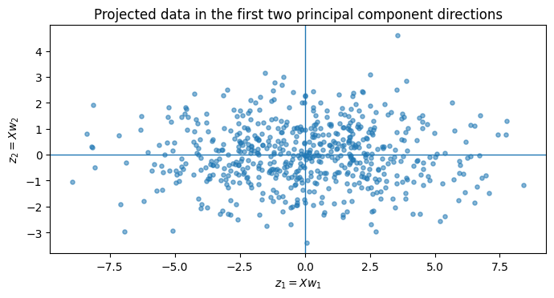
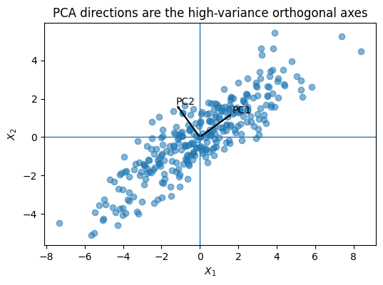
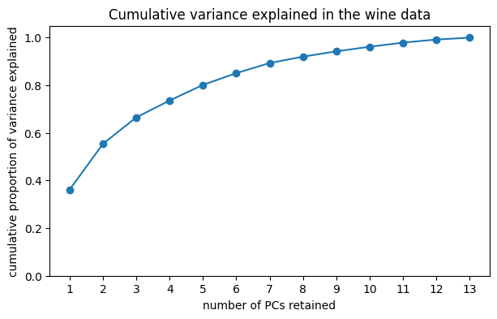
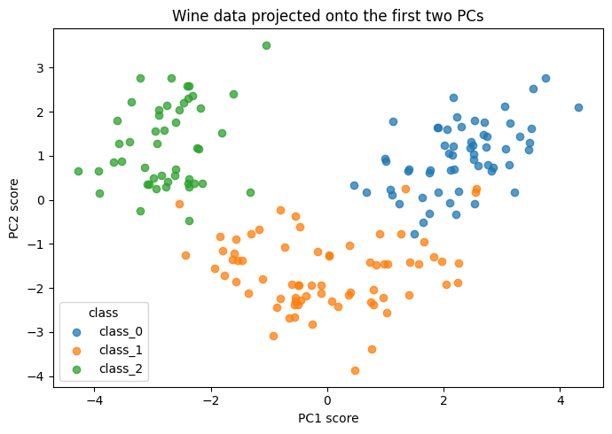
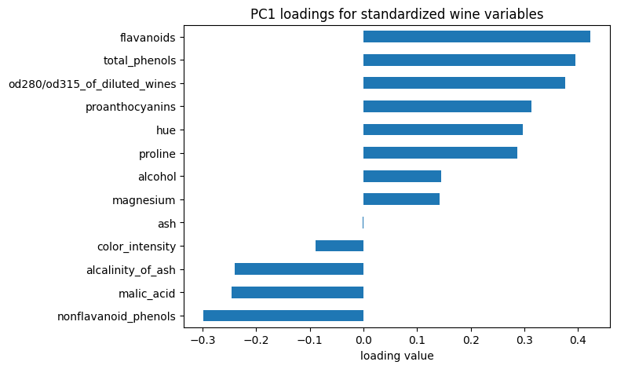

These materials were developed with assistance from AI tools. All content has been reviewed and edited by the instructor, who takes final responsibility for its accuracy, clarity, and appropriateness for the course. Students should treat these materials as instructor-reviewed course content while applying the same critical judgment they would use with any technical material. Please report any suspected errors or unclear explanations to ghunt@wm.edu.
Throughout, let
\[
X \in \mathbb{R}^{N\times D}
\]
be the data matrix. Rows are observations and columns are variables.
Show code
import numpy as npimport pandas as pdimport matplotlib.pyplot as pltfrom numpy.linalg import eigh, normfrom IPython.display import displaynp.set_printoptions(precision=4, suppress=True)def unit(v):"""Return a unit-length version of a vector.""" v = np.asarray(v, dtype=float)return v / norm(v)
Show code
def orient_eigenvectors(V):"""Choose a deterministic sign convention for eigenvectors. Eigenvectors are only defined up to sign. This function flips each eigenvector so that its largest absolute entry is positive. """ V = V.copy()for j inrange(V.shape[1]): idx = np.argmax(np.abs(V[:, j]))if V[idx, j] <0: V[:, j] *=-1return Vdef pca_from_covariance(X, q=None, center=True):"""Compute PCA by forming the covariance matrix and finding its eigenpairs. Parameters ---------- X : array-like, shape (N, D) Data matrix with observations in rows and variables in columns. q : int or None Number of principal components to return. If None, return all. center : bool Whether to subtract column means before forming the covariance matrix. """ X = np.asarray(X, dtype=float) N, D = X.shapeif center: mean = X.mean(axis=0) X0 = X - meanelse: mean = np.zeros(D) X0 = X.copy() S_X = (X0.T @ X0) / (N -1)# eigh is for symmetric matrices. It returns eigenvalues in ascending order. eigenvalues, eigenvectors = eigh(S_X) order = np.argsort(eigenvalues)[::-1] eigenvalues = eigenvalues[order] eigenvectors = eigenvectors[:, order]# Tiny negative values can occur from floating-point error. eigenvalues = np.maximum(eigenvalues, 0) eigenvectors = orient_eigenvectors(eigenvectors)if q isNone: q = D W = eigenvectors[:, :q] scores = X0 @ Wreturn {"mean": mean,"centered_data": X0,"covariance": S_X,"eigenvalues": eigenvalues,"eigenvectors": eigenvectors,"W": W,"scores": scores, }
PCA is a dimensionality reduction technique.
The first goal is to replace variables
\[
X_1,\ldots,X_D
\]
with new ones
\[
Z_1,\ldots,Z_q,
\]
where
\[
q \ll D.
\]
We will call these \(Z_i\) the principal component scores.
The second goal is to avoid losing too much “information”.
The central dogma of PCA is that:
\[
\text{variance} \approx \text{information}.
\]
So PCA tries to find new variables with large variance.
import matplotlib.pyplot as pltscores_2d = scores[:, :2]plt.figure(figsize=(7, 6))plt.scatter( scores_2d[:, 0], scores_2d[:, 1], s=14, alpha=0.55)plt.axhline(0, linewidth=1)plt.axvline(0, linewidth=1)plt.xlabel("$z_1 = X w_1$")plt.ylabel("$z_2 = X w_2$")plt.title("Projected data in the first two principal component directions")plt.gca().set_aspect("equal", adjustable="box")plt.tight_layout()plt.show()

Here, we are visualizing \(X\) row-wise so that the \(n^{\text{th}}\) row is
\[
x_n \in \mathbb{R}^D.
\]
PCA tries to keep this simple, it looks at linear combinations of the original variables \(X_1,\ldots,X_D\) to create \(Z_1,\ldots,Z_q\). Equivalently, the goal is to find a lower-dimensional (linear) subspace of \(\mathbb{R}^D\) so that when we project the data onto this subspace we don’t lose too much information.
18.1 Projection matrices
Let’s do a refresher on projection matrices. Let \(W\) be the \(D\times q\) matrix of basis elements for the lower-dimensional subspace.
The projection matrix onto \(\operatorname{Col}(W)\) is
If \(x\in\mathbb{R}^{1 \times D}\) is a row-vector, then
\[
xP_W \in\mathbb{R}^D
\]
is the projected point, still written in the original \(\mathbb{R}^D\) coordinates.
For this lecture, WLOG, we can assume that the columns of \(W\) are orthonormal so that we have an orthonormal basis (Why not?). In this case,
\[
W^TW=I_q,
\]
(why?) so
\[
P_W=WW^T.
\]
Then
\[
xP_W=xWW^T.
\]
If we want to project all of the data points (rows) in \(X\in\mathbb{R}^{N\times D}\) onto \(\operatorname{Col}(W)\) then we can write it as:
\[
XP_W = XWW^T \in\mathbb{R}^{N \times D}
\]
This would be our original data points but now projected down onto the \(q\)-dimensional subspace.
There are two related objects:
\[
Z = XW \in \mathbb{R}^{N\times q}
\]
is the data expressed in the new \(q\)-dimensional coordinates, while
\[
XP_W = XWW^T \in \mathbb{R}^{N\times D}
\]
is the projected data written back in the original \(D\) coordinates.
18.2 Principal components as linear combinations
Since PCA wants to find positions of the data points in the lower-dimensional space (i.e using only \(q\) variables), then we are mostly interested in \[
Z=XW
\] i.e., the data matrix embedded in the lower-dimensional coordinates.
Notice that if \(Z_i\) is the \(i^{\text{th}}\) column (variable) of \(Z\), \(X_j\) is the \(j^{\text{th}}\) column (variable) of \(X\), and \(w_i\) is the \(i^{\text{th}}\) column of \(W\), then
\[
Z_i = Xw_i
\]
and therefore
\[
Z_i = X_1w_{i1}+X_2w_{i2}+\cdots+X_Pw_{iD}.
\]
So, equivalently, each principal component is a linear combination of the original columns of \(X\).
18.3 PCA objective
With all this in mind, one way to frame PCA is: it finds linear combinations of the columns (variables) of \(X\) such that
the variances of the resulting \(Z_i\) variables are as large as possible (recall: want to retain information \(\approx\) variance)
the \(Z_i\) variables are uncorrelated (so there is no redundancy)
the \(w_i\) vectors have unit length (a practical constraint, otherwise variance could grow without bound)
For example, to find the first PC we could sweep over all possible vectors:
Show code
import numpy as npimport matplotlib.pyplot as pltfrom IPython.display import display, clear_outputimport ipywidgets as widgetsrng = np.random.default_rng(657677)n =300# Start with independent coordinates with unequal variancesZ = rng.normal(size=(n, 2))Z[:, 0] *=3.0Z[:, 1] *=0.8# Rotate the cloud so the main direction is not axis-alignedtheta = np.pi /5R = np.array([ [np.cos(theta), -np.sin(theta)], [np.sin(theta), np.cos(theta)]])X = Z @ R.T# Mean-center the data before applying PCAX = X - X.mean(axis=0)# Compute projected variance over all directionsangles = np.linspace(0, np.pi, 361)variances = []for a in angles: w_a = np.array([np.cos(a), np.sin(a)]) z_a = X @ w_a variances.append(np.var(z_a, ddof=1))variances = np.array(variances)best_angle = angles[np.argmax(variances)]best_angle_deg = np.rad2deg(best_angle)best_w = np.array([np.cos(best_angle), np.sin(best_angle)])print("Best direction angle, degrees:", best_angle_deg.round(2))print("Best unit vector:", best_w.round(4))print("Max projected variance:", variances.max().round(4))# Interactive displayangle_slider = widgets.FloatSlider( value=best_angle_deg,min=0,max=180, step=1, description="angle", continuous_update=True, readout_format=".0f")out = widgets.Output()xlim =1.15* np.max(np.abs(X[:, 0]))ylim =1.15* np.max(np.abs(X[:, 1]))line_t = np.linspace(-4, 4, 100)def plot_for_angle(angle_deg): a = np.deg2rad(angle_deg) w = np.array([np.cos(a), np.sin(a)]) z = X @ w current_variance = np.var(z, ddof=1) line = line_t[:, None] * w[None, :]with out: clear_output(wait=True) fig, axes = plt.subplots(1, 2, figsize=(12, 5))# Left plot: projected variance as a function of angle axes[0].plot(np.rad2deg(angles), variances) axes[0].scatter([angle_deg], [current_variance], s=80, zorder=3) axes[0].axvline(best_angle_deg, linestyle="--", linewidth=1) axes[0].set_xlabel("direction angle in degrees") axes[0].set_ylabel(r"sample variance of $Xw$") axes[0].set_title("Projected variance by direction") axes[0].text(0.03,0.95,f"current variance = {current_variance:.3f}\nbest angle = {best_angle_deg:.1f}°", transform=axes[0].transAxes, va="top" )# Right plot: data cloud and selected direction axes[1].scatter(X[:, 0], X[:, 1], s=18, alpha=0.45) axes[1].plot(line[:, 0], line[:, 1], linewidth=3, label="selected direction")# Optional: show projections of points onto the selected direction projected = np.outer(z, w) axes[1].scatter(projected[:, 0], projected[:, 1], s=10, alpha=0.25) axes[1].axhline(0, linewidth=1) axes[1].axvline(0, linewidth=1) axes[1].set_xlim(-xlim, xlim) axes[1].set_ylim(-ylim, ylim) axes[1].set_xlabel("$x_1$") axes[1].set_ylabel("$x_2$") axes[1].set_title("Data cloud and selected direction") axes[1].set_aspect("equal", adjustable="box") axes[1].legend() plt.tight_layout() plt.show()def update(change): plot_for_angle(change["new"])angle_slider.observe(update, names="value")display(angle_slider, out)plot_for_angle(angle_slider.value)
Best direction angle, degrees: 36.0
Best unit vector: [0.809 0.5878]
Max projected variance: 9.745
Ok, so how do we do this generally?
18.4 Aside: variance and covariance notation
Let \(x\in\mathbb{R}^N\) be a variable observed on \(N\) units. (Note this is a column of \(X\) here)
Assume
\[
\bar{x}=\frac{1}{N}\sum_{n=1}^N x_n=0.
\] (if not, mean-center the variable). Then
If \(X\) is an \(N\times D\) data matrix then the sample covariance matrix the is a \(D\times D\) matrix \(S\) where
\[
S_{ij}=\widehat{\operatorname{Cov}}(X_i,X_j),
\qquad
S_{ii}=\widehat{\operatorname{Var}}(X_i).
\] It encodes all of the variances of the variables and all of the covariances amongt the variables. Its rather like a generalization of the variance to a collection of variables.
If \(X\) has mean-centered columns, then
\[
S = \widehat{\operatorname{Cov}}(X)
=\frac{1}{N-1}X^TX \propto X^TX
\]
Note: \(S\) is symmetric so that \(S=S^T\).
18.5 The PCA Problem
Let \(X \in \mathbb{R}^{N \times D}\) be centered, so each column has sample mean zero. Define the sample covariance matrix
\[
S_X = \frac{1}{N-1}X^TX.
\]
For a unit direction \(w \in \mathbb{R}^D\), the corresponding score variable is
Thus PCA can be understood as finding directions \(w_1,w_2,\dots\) so that the score variables \(Xw_1,Xw_2,\dots\) have large variance and are uncorrelated.
More explicitly, the first principal component is defined by the optimization problem
For later components, we want the new score to have large variance while being uncorrelated with the previous scores. So, for \(k \geq 2\),
\[
w_k=\arg\max_{\|w\|_2=1,\; \operatorname{Cov}(Xw, Xw_j)=0 \text{ for } j<k}
\operatorname{Var}(Xw).
\]
Equivalently,
\[
w_k=\arg\max_{\|w\|_2=1,\; \operatorname{Cov}(Xw, Xw_j)=0 \text{ for } j<k}
w^T S_X w.
\]
So the objective is sequential: each new component maximizes variance subject to unit length and zero covariance with all previously chosen score variables. Since \(X\) is centered,
\[
\operatorname{Cov}(Xw, Xw_j)=w^T S_X w_j.
\]
Therefore, the optimization can also be written as
\[
w_k=\arg\max_{\|w\|_2=1,\; w^T S_X w_j=0 \text{ for } j<k}
w^T S_X w.
\]
After the optimization, the principal component scores are then
\[
z_k = Xw_k.
\]
18.5.1 Simplified Rayleigh quotient theorem
Let \(A \in \mathbb{R}^{D \times D}\) be symmetric (like a covariance matrix). One can show that this means that it has a basis of real orthonormal eigenvectors and associated real eigen-values. Let the eigenvectors be:
Thus the PCA scores are uncorrelated, and their variances are
\[
\lambda_1,\dots,\lambda_q.
\]
So the eigenvalue derivation gives exactly what PCA wants: the scores are uncorrelated, their variances are as large as possible in order, and the directions are unit vectors.
Caveats: If two eigenvalues are equal, then the corresponding eigenvectors are not uniquely determined inside that tied eigenspace. Also, signs are arbitrary: replacing \(v_i\) by \(-v_i\) only flips the sign of the corresponding score.
18.7 PCA from the covariance matrix
The practical calculation follows directly from the derivation above.
Start with centered data \(X\) and form the covariance matrix
The columns of \(W_q\) are the loadings or principal directions.
The columns of \(Z_q\) are the principal components or scores.
This is the method we will use below. In code, the only subtle detail is that many numerical routines return eigenvalues in ascending order, so we sort them in decreasing order before selecting the first \(q\) components.
Show code
res = pca_from_covariance(X, q=2, center=True)S_X = res["covariance"]V = res["eigenvectors"]eigenvalues = res["eigenvalues"]W = res["W"]Z = res["scores"]print("Covariance matrix S_X:")print(S_X)print("\nEigenvectors V, stored in columns:")print(V)print("\nEigenvalues:")print(eigenvalues)print("\nCovariance of the first two PC scores:")print(np.cov(Z, rowvar=False, ddof=1))
Covariance matrix S_X:
[[6.5796 4.3459]
[4.3459 3.7781]]
Eigenvectors V, stored in columns:
[[ 0.8083 -0.5887]
[ 0.5887 0.8083]]
Eigenvalues:
[9.745 0.6128]
Covariance of the first two PC scores:
[[ 9.745 -0. ]
[-0. 0.6128]]
Show code
# Plot the PCA directions on top of the synthetic data.plt.figure(figsize=(6, 5))plt.scatter(X[:, 0], X[:, 1], alpha=0.55)for j inrange(2): direction = V[:, j] length =2.0 end = length * direction plt.arrow(0, 0, end[0], end[1], width=0.03, length_includes_head=True) plt.text(end[0] *1.05, end[1] *1.05, f"PC{j+1}")plt.axhline(0, linewidth=1)plt.axvline(0, linewidth=1)plt.gca().set_aspect("equal", adjustable="box")plt.xlabel(r"$X_1$")plt.ylabel(r"$X_2$")plt.title("PCA directions are the high-variance orthogonal axes")plt.show()

18.8 Total variance and percent captured
One useful metric is the total variance captured by the first \(q\) PC scores:
The denominator is the total variance across the original centered variables. The numerator is the variance retained after projecting onto the first \(q\) principal component directions.
If we do not center the columns, the first principal component can mostly describe the location of the data cloud relative to the origin. In that case, \(z_1\) may be close to a mean direction rather than the main direction of variation around the mean.
Show code
rng = np.random.default_rng(657677)n =500# A stretched 2D cloudZ = rng.normal(size=(n, 2))Z[:, 0] *=3.0Z[:, 1] *=0.5# Rotate the cloudtheta = np.pi /5R = np.array([ [np.cos(theta), -np.sin(theta)], [np.sin(theta), np.cos(theta)]])X_centered_true = Z @ R.T# Add a large mean shiftmu = np.array([-8.0, 6.0])X_raw = X_centered_true + mu
Show code
# Uncentered: use X_raw^T X_raw instead of the covariance matrix of centered data.res_uncentered = pca_from_covariance(X_raw, q=1, center=False)v_uncentered = res_uncentered["W"][:, 0]# Centered: subtract the column means before forming the covariance matrix.res_centered = pca_from_covariance(X_raw, q=1, center=True)v_centered = res_centered["W"][:, 0]
Show code
v_uncentered
array([ 0.8287, -0.5597])
Show code
v_centered
array([0.8075, 0.5898])
Show code
mean_direction = unit(X_raw.mean(axis=0))print("Absolute dot product: uncentered PC1 with mean direction")print(abs(v_uncentered @ mean_direction).round(4))print("\nAbsolute dot product: centered PC1 with mean direction")print(abs(v_centered @ mean_direction).round(4))print("\nUncentered PC1:")print(v_uncentered.round(4))print("\nCentered PC1:")print(v_centered.round(4))print("\nMean direction:")print(mean_direction.round(4))
Absolute dot product: uncentered PC1 with mean direction
0.9996
Absolute dot product: centered PC1 with mean direction
0.3109
Uncentered PC1:
[ 0.8287 -0.5597]
Centered PC1:
[0.8075 0.5898]
Mean direction:
[-0.8117 0.5841]
18.10 Real data
For a real data example, use the wine data from sklearn.datasets.
The variables are measured in different units, so we use PCA on standardized variables. This means PCA is applied to the correlation structure rather than the raw covariance structure.
After standardization, we form the covariance matrix and compute its eigenvalues and eigenvectors.
from sklearn.preprocessing import StandardScaler# Standardize each variable before PCA.scaler = StandardScaler()X_wine = scaler.fit_transform(X_wine_raw)
plt.figure(figsize=(7, 4))plt.plot(wine_explained["PC"], wine_explained["proportion"], marker="o")plt.xlabel("principal component")plt.ylabel("proportion of variance explained")plt.title("Wine data scree plot")plt.xticks(wine_explained["PC"])plt.show()

Show code
plt.figure(figsize=(7, 4))plt.plot(wine_explained["PC"], wine_explained["cumulative_proportion"], marker="o")plt.xlabel("number of PCs retained")plt.ylabel("cumulative proportion of variance explained")plt.title("Cumulative variance explained in the wine data")plt.xticks(wine_explained["PC"])plt.ylim(0, 1.05)plt.show()
Show code
Z_wine = X_wine_scoresplt.figure(figsize=(7, 5))for k, name inenumerate(target_names): mask = target == k plt.scatter( Z_wine[mask, 0], Z_wine[mask, 1], alpha=0.75, label=name )plt.xlabel("PC1 score")plt.ylabel("PC2 score")plt.title("Wine data projected onto the first two PCs")plt.legend(title="class")plt.tight_layout()plt.show()

18.10.1 Interpreting loadings
The loadings are the entries of the vectors \(v_i\).
Variables with large absolute loading values contribute more to that principal component. The sign is meaningful relative to other variables, but the whole vector can be multiplied by \(-1\) without changing the PCA solution. Sometimes we can “interpret” what the PCs are telling us:
loading_table["PC1 loading"].sort_values().plot(kind="barh", figsize=(7, 5))plt.xlabel("loading value")plt.title("PC1 loadings for standardized wine variables")plt.show()

18.10.2 Note on matrix decompositions
The eigenvalue/eigenvector approach above is the PCA-level version of ideas that are often written using the EVD or SVD in a linear algebra course; for this lecture, the covariance matrix and its eigenvectors are enough.
18.11 High-dimensional Visualization: MNIST
We can also use PCA to visualize high dimensional data like MNIST:
Show code
from sklearn.preprocessing import StandardScalerfrom sklearn.decomposition import PCAfrom sklearn.pipeline import make_pipeline
# PCA centers internally, so we do not need to manually subtract the mean.pca = PCA(n_components=2)Z = pca.fit_transform(X_sub)print("Explained variance ratio:")print(pca.explained_variance_ratio_)print("\nTotal variance explained by first 2 PCs:")print(pca.explained_variance_ratio_.sum().round(4))
Explained variance ratio:
[0.1001 0.0699]
Total variance explained by first 2 PCs:
0.17
Show code
plt.figure(figsize=(8, 6))scatter = plt.scatter( Z[:, 0], Z[:, 1], c=y_sub, s=8, alpha=0.75, cmap="tab10")plt.xlabel(f"PC1 ({pca.explained_variance_ratio_[0]:.1%} variance)")plt.ylabel(f"PC2 ({pca.explained_variance_ratio_[1]:.1%} variance)")plt.title("MNIST projected onto the first two principal components")cbar = plt.colorbar(scatter, ticks=np.arange(10))cbar.set_label("Digit")plt.tight_layout()plt.show()